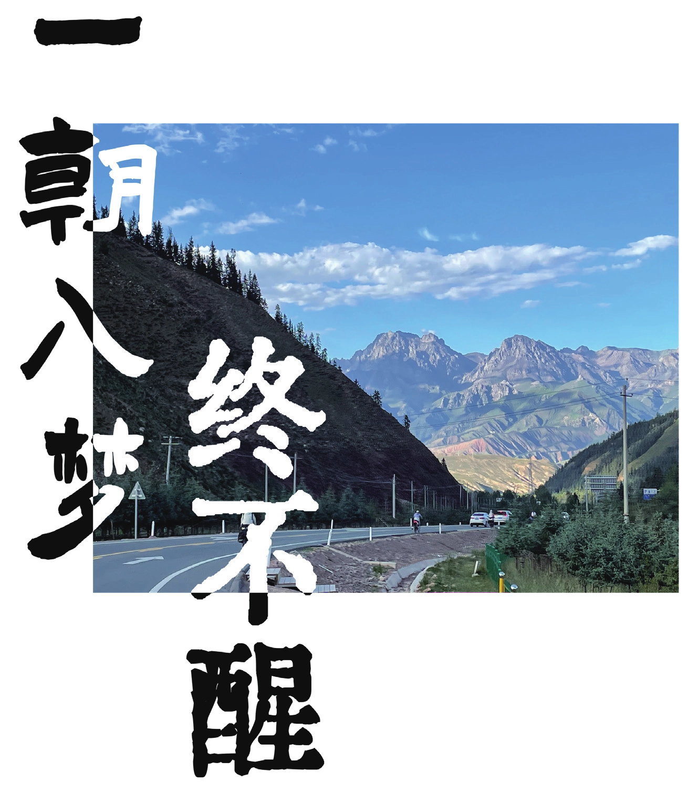
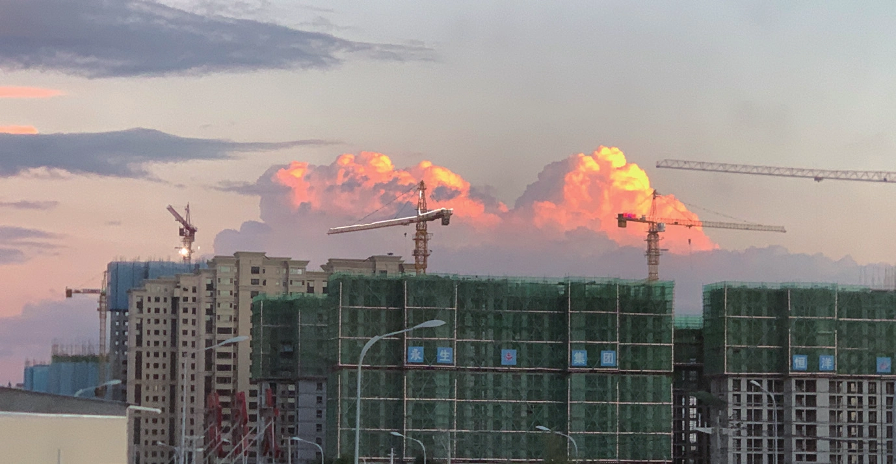
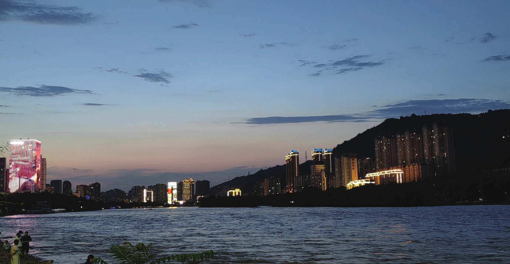

一朝入梦终不醒
原刊56


不知不觉已经 2024 年了，距离暑期已经半年，甚至距离我用“青鸟”或是“六哥”这个署名写东西也过了相当一段时间。23暑期于我来说确实是一段神奇的经历，但我并不清楚我写下的这些会不会有人愿意看，如果有倒是最好，没有的话也无所谓，只当作是我个人在半年后的一场回忆吧。
分配任务时似乎我被要求写个人感想，但正如电影《邪不压正》中所说的一般，写出来的算不得真心话。我更愿意回忆一些有意思的故事，聊一聊我那有趣的团众们，揭开一些未竟的遗憾。暑期说白了就是骑上二十多天的车，就算天天路边都有好看的风景，一直骑车也难免厌烦，所以总得给自己找点乐子。关于这一点，我团主要分为了觅食派和夜游派，前者一般在休整日睡上大半天，然后出去找好吃的；而后者可能在任何一个晚上溜到大街小巷。由于夜游派对体力要求较高，因此以排行靠后的小朋友们居多。而我作为坚定的觅食派，在每个休整日都不遗余力地睡觉，以至于走过一个暑期，基本上只对各大城镇的夜生活有印象，现在想来也是有些可惜。


每一个即将参加暑期的新会员，或多或少都对团众之间的相处抱有期待。我认为，大家的相处不能简单地用是否融洽来评判，其中的根本原因在于一个人不可能对自己的十几个团众都怀有完全相等的兄弟姐妹般的亲密感情，至少我没见过这样的人。在我看来，我团的关系处在一个极其微妙的状态，大家的关系都还不错，但又不那么紧密，平均下来大概类似于普通朋友以上，兄弟姐妹以下的氛围。以至于在遇到一些分歧时，大家基本上可以谦让着把事情解决了，虽然这种谦让一部分是基于高素质大学生之间的客气。对于一个骑行团来说，这种状态无可厚非，只是可能和大家之前所听说的有些差距罢了。理想与现实总是差距极大，也不可能每个团都集齐天时地利人和复刻某个有些理想化的关系。
当然，这些只是我作为其中一员的看法，也不排除是我心理过于阴暗的表现。一千个读者有一千个哈姆雷特，但是绝对不会有哈利波特，其中奥妙，诸位自行揣摩。
在整个暑期的过程中，我扮演的角色也很有趣。我的体力在团内算是中等，又自认为能够感受到他人的想法，因此有时会在团会上说一些在我看来更有利于团队又不太方便由团长说的东西，也不知道那个土豆有没有感觉到，我有没有白忙活……我记得我和好几个人聊过天，还打肿脸充胖子地当他们的心理导师，实际上我自己还没活明白呢。但人和人的相处就是这么有趣，在日常的相处中你会忍不住深入了解一个人，但想要更深入地了解一个人又需要回归到和他的日常相处，在这个过程中我也更能感受他们的情绪变化，四舍五入下来，也算是为团队做了贡献。


在整个暑期中，令我感到遗憾的是八和大姐。这都是我从暑期回来后才想明白的事情，可惜当时没有想到。记得小八受伤后，我们在刚察的住宿点和好几个人夜聊，小八也希望听听我们的意见来决定她的去留。我当时的想法非常简单：当断则断，如果决定走，就不必拖泥带水，如果决定留，那这些个兄弟姐妹二话不说，怎么着也给你带到终点。但是当时说好听点是关心则乱，说难听点就是声色俱厉，在陈述事实的时候有点把话说死了，一直要她赶紧表达明确的态度，最终小八决定离队，对她来说也是一个遗憾，事后回想起来，我当时的话也起到了一定的负面效果。其二便是大姐。不知道从暑期的哪一段时间开始，大姐的状态开始变得很不好。先是身体上，再是情绪上。直接的体现便是高反和生病，甚至连最后的长团会也无力参加。暑期路上我也只当是大姐身体状况不好，没太在意。直到开学后我了解到大姐的生活出现了一些变故，再回想之前的蛛丝马迹，顿觉愧疚。我不清楚大姐有没有和他人分享她的痛苦，但如果我能早点意识到，可能会好一些。大姐一直很照顾我们的感受，我们却没能在她最需要关心的时候帮上忙，还是有些遗憾的。
暑期远征，骑的是车，看的是景，思考的却是人。权且留下这些记号，以供日后回忆。但这里似乎并没有涉及太多我对自己的感受，这与我在最开始所说的一致，或许将来有机会，我想亲口讲出一些故事……